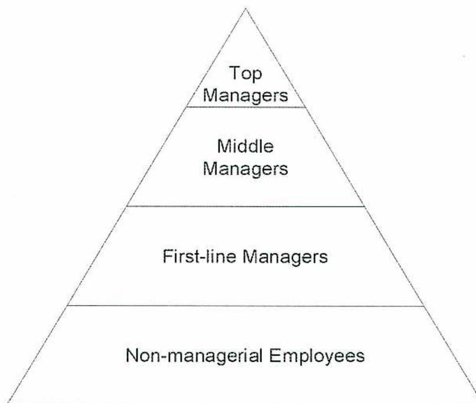
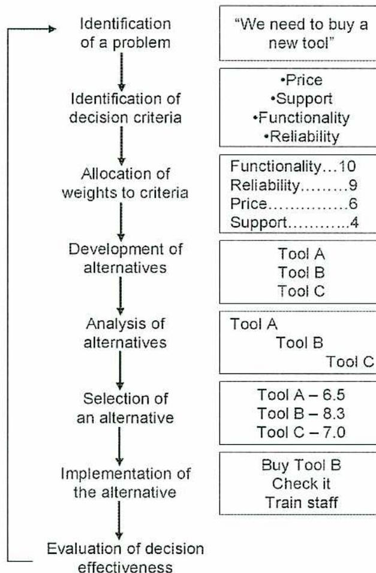
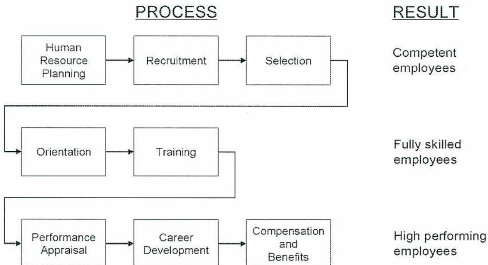

Management and Supervision
5
Learning Outcome
When you complete this learning material, you will be able to:
Describe the roles and basic competencies of a supervisor and manager.
Learning Objectives
You will specifically be able to complete the following tasks:
- 1. Define management and explain the general functions of management.
- 2. Explain how management goals and objectives are developed through planning.
- 3. Describe how business decisions are made.
- 4. Describe methods of selecting new employees.
- 5. Explain how employees are trained.
- 6. Explain how to provide leadership and motivate employees.
- 7. Explain how to manage employee performance and behaviours.
- 8. Demonstrate proper communication skills by writing a formal report.
Objective 1
Define management and explain the general functions of management.
INTRODUCTION
As power engineers gain experience and expertise, they may become increasingly involved in management and supervision. Their technical role decreases, and their prime responsibility changes to guiding and directing other employees with a focus of meeting business objectives. This requires new skills and a shift in job activities. Not all power engineers will want to give up direct technical involvement but they will realise that a role in management can be very satisfying.
This module is a summary of what is required to be an effective manager, and further training expands and builds on the ideas presented here. As well, management is a constantly changing area and improvements are made as new insights are gained.
ORGANIZATIONS
In order to understand management, it is necessary first to discuss organizations. An organization is a group of people that is systematically arranged to accomplish a specific purpose. There are many different types of organizations such as government agencies, oil companies, manufacturers, not-for-profit organizations, service companies, sports teams, and many more.
Despite their diversity, organizations have three common characteristics as shown in Fig. 1:
- 1. A distinct purpose
- 2. People
- 3. A deliberate structure
Every organization has a distinct purpose that is expressed by a goal or set of goals. These goals may change over time but often remain fundamentally the same.
Each organization has people that have a variety of roles and activities focussed on realizing the purpose of the organization.
There is a structure to the organization that governs activities and defines and limits the behaviour of its members. This is evident in not only the organizational structure that
There are three categories of managers: first-line managers, middle managers, and top managers.
First-line managers are often called supervisors or team leaders, and they directly coordinate the work of non-managerial employees. Many power engineers assume the role of a first-line manager.
Middle manager roles usually involve coordinating and integrating the activities of various work teams or organizational units. There may be several levels of middle managers between the first-line managers and top managers especially in large organizations.
Top managers are responsible for making organizational decisions and setting policies, strategies, and objectives for the entire organization. Although many smaller decisions are made by first-line and middle managers, the final decision making responsibility lies with the top managers.
This produces a hierarchical structure such as the one shown in Fig. 2. Although this type of structure appears to be more of a traditional one with a rigid hierarchy, it can also represent a more flexible approach.

| Level |
|---|
| Top Managers |
| Middle Managers |
| First-line Managers |
| Non-managerial Employees |
Figure 2
Organizational Levels
MANAGEMENT ROLES
Sometimes it is more accurate to describe the functions of a manager by looking at their job roles. A study done by Henry Mintzberg concluded that managers perform ten different but interrelated roles that can be grouped into three areas: interpersonal, informational and decisional.
Interpersonal roles involve:
- • Interrelating with others as a symbolic figurehead (such as presenting an award)
- • Being a leader to motivate employees
- • Liaison or interacting with others
Informational roles include acting as:
- • A monitor (seeking and receiving information)
- • A disseminator (transmitting information)
- • A spokesperson (official transmission of information to outsiders)
Decisional roles break down into one or more of the following:
- • Entrepreneur (organizing strategy and review sessions to develop new programs)
- • Disturbance handler (corrective action for unexpected problems)
- • Resource allocator (identifying and scheduling activities)
- • Negotiator (discussing and resolving issues)
Objective 2
Explain how management goals and objectives are developed through planning.
BASICS OF PLANNING
The first function of management is planning. Planning has three aspects:
- 1. Defining corporate goals and objectives
- 2. Establishing strategies for achieving goals and objectives
- 3. Developing specific plans for implementing goals and objectives
It may seem that planning is carried out only by top level managers, but planning occurs at all levels as a consolidated effort by all employees.
In this module, only formal planning is discussed. Formal planning requires that plans are developed, documented and clearly communicated.
Planning provides direction both to managers and to non-managerial employees. If everyone knows what the overall objectives are and what part they play, they can coordinate activities and work together to achieve them without overlap and duplication.
Planning forces managers to look ahead, identify needed changes and develop appropriate responses. This reduces uncertainty and manages change more effectively.
Planning develops objectives that can be used in the management function called controlling. With clear objectives, it is possible to compare them against actual performance and take corrective action if needed.
TYPES OF PLANS
Plans are categorized in several ways. The most common way of describing plans is to divide them into the following types:
- 1. Breadth: strategic vs. operational
- 2. Time frame: short-term vs. long-term
- 3. Specificity: specific vs. directional
- 4. Frequency of use: single use vs. standing
OBJECTIVES
With a good understanding of planning, it is now possible to discuss objectives. Objectives and goals are usually interchangeable terms.
What Are Objectives?
Objectives are the desired outcomes for the organization, groups within the organization, and individuals. Objectives are the basis for making decisions. They are essential for controlling because they are the criteria which need to be measured and the criteria against which actual performance is compared.
An organization has a set of objectives. In addition to the financial objectives around revenue, cost, earnings, and profit, organizations may have objectives dealing with employee and public safety, product quality, production, reputation, superior service, environmental stewardship, and social programs.
Objectives often have a hierarchy with general objectives at the top and more specific objectives at lower levels. Although top corporate objectives are important guideposts to the purpose and goals of an organization, it is the middle and lower objectives that are most relevant to lower-level managers because they are the ones who determine action plans that impact employees.
Developing Objectives
There are various ways to develop or set objectives. The traditional way is for top-level managers to develop the overall corporate goals and targets, and then sit down with the middle managers and review these goals and targets and identify who will be accountable for meeting each target. The middle managers will evaluate their departmental targets and goals and develop, with their front line managers and team leaders, the strategies that they need to meet the targets and goals that they own. The team leaders and supervisors then work together with all of the departmental employees to implement the strategies and realize the goals. The objectives form a network of objectives that are interdependent and linked.
A weakness of the traditional approach is that it fails to consider input from all parts of an organization. This may create unrealistic objectives and difficulties in obtaining success.
Many organizations now use management by objectives (MBO). Employees involved jointly develop objectives and progress is periodically reviewed. Rewards are tied directly to performance as it relates to agreed objectives. Many organizations find MBO to be effective and to provide important motivation to both managers and employees.
MBO has four basic elements:
- 1. Specific goals and objectives
- 2. Joint decision making by participants
Objective 3
Describe how business decisions are made.
DECISION MAKING PROCESS
The ability to make effective decisions is the most important attribute of a successful manager. The simple view of decision making is that it is choosing between available alternatives. In practice, it is a comprehensive process with risks and uncertainties. The eight steps in the decision making process are illustrated in Fig. 4 with an example and a further explanation below.

The diagram illustrates the decision-making process as a vertical flow of eight steps, each accompanied by a rectangular box containing an example. A feedback arrow on the left side points from the final step back to the first.
| Identification of a problem | "We need to buy a new tool" |
| Identification of decision criteria |
•Price
•Support •Functionality •Reliability |
| Allocation of weights to criteria |
Functionality...10
Reliability.....9 Price.....6 Support.....4 |
| Development of alternatives |
Tool A
Tool B Tool C |
| Analysis of alternatives |
Tool A
Tool B Tool C |
| Selection of an alternative |
Tool A – 6.5
Tool B – 8.3 Tool C – 7.0 |
| Implementation of the alternative |
Buy Tool B
Check it Train staff |
| Evaluation of decision effectiveness |
Figure 4
Steps in the Decision making Process
Selecting an Alternative
In theory, the best alternative is the one with the highest score. If there are several scores that are very close to each other, the factors and even the weighting factors may have to be reconsidered. Political or other factors may present themselves and influence the final result. The original need to resolve the problem may be revisited once the alternatives and solution are known. The cost may be too high for the budget and the purchase is delayed until the next year.
Implementing the Alternative
This step is concerned with implementing the chosen alternative and success is not achieved until this occurs. Acceptance of the decision is advanced if affected staff is involved in the decision making process from the beginning.
Evaluating Decision Effectiveness
Every manager ensures the decision has been effective in solving the problem. Sometimes it becomes evident the problem still exists and has resurfaced elsewhere. A new evaluation or review is called for, giving careful evaluation as to which step is responsible for the failure.
MAKING DECISIONS
Decisions do not need to be time-consuming or difficult to make. The larger the decision in terms of impact and resources needed, the more effort required for the decision making process.
If an incorrect decision is made, it is tempting to blame the process. A rational approach along with a sound process does not always give the right answer. This is based on the assumption that the correct decision will be made if:
- • the problem is clearly identified
- • there is no conflict in goals and objectives
- • all of the options are known and understood
- • there are clear preferences with respect to the evaluation criteria that do not change with time
- • there are no time or cost constraints
- • the desired alternative is always the one with the maximum payoff
Unfortunately, a pure rational approach is not always feasible and decisions are often made without complete analysis. An intuitive decision may actually be the most efficient way to make a decision if a manager has experience and a thorough understanding of the options. The first time a certain tool is purchased, a detailed evaluation is necessary. Its replacement after a few years may be accomplished with only a cursory analysis of criteria that have changed.
In these cases, managers may have to be prepared to defend their decision making process to others who may conclude they are not applying due diligence.
Objective 4
Describe methods of selecting new employees.
HUMAN RESOURCE MANAGEMENT
Human Resource Management is attracting and retaining qualified staff. In large companies, an entire department is focussed on this task. In addition, all levels of management are heavily involved in activities related to human resource management.
There are three major functions of human resource management.
- 1. Identification and selection of employees
- 2. Ensuring employee competency
- 3. Retaining and rewarding employee performance
These functions break down further into eight steps to form the human resource management process (see Fig. 5).

| PROCESS | RESULT | ||
|---|---|---|---|
| Human Resource Planning | Recruitment | Selection | Competent employees |
| Orientation | Training | Fully skilled employees | |
| Performance Appraisal | Career Development | Compensation and Benefits | High performing employees |
graph TD
subgraph Row1 [ ]
direction LR
R1_1[Human Resource Planning] --> R1_2[Recruitment] --> R1_3[Selection]
end
subgraph Row2 [ ]
direction LR
R2_1[Orientation] --> R2_2[Training]
end
subgraph Row3 [ ]
direction LR
R3_1[Performance Appraisal] --> R3_2[Career Development] --> R3_3[Compensation and Benefits]
end
R1_3 --> R2_1
R2_2 --> R3_1
R3_3 --> R3_1
style Row1 fill:none,stroke:none
style Row2 fill:none,stroke:none
style Row3 fill:none,stroke:none
Figure 5
Steps in the Human Resource Management Process
wrong person is costly because it includes the cost of training, cost due to incompetence, cost of removing the candidate and the cost of further recruiting and selection.
A manager may use one or more methods to achieve success in the selection process. The application form is a universal method used to do initial screening, particularly for those candidates that apply externally and are unknown to the manager. Its purpose is to communicate education, skills, accomplishments and experience but it is rarely sufficient by itself. The candidate usually provides a resume with the application form.
Written tests are sometimes used during the candidate selection process. These tests usually involve general knowledge exercises together with site-specific or process specific work assignments to give the prospective employer as much knowledge of the candidate's current knowledge and skill level as possible. They can be effective but do require more preparation or the use of an outside agency. The information is then combined with data from a formal interview to assist in matching the best candidate to a specific position.
The most common method of candidate selection is the job interview. It is an essential part of the selection process. The candidate meets with the supervisor, others from the same department, possibly representatives from other departments and sometimes a human resources person.
Although the interview will probably never be replaced, it has significant drawbacks and research has shown that it is often not especially effective. The reasons have to do with both the interviewer and the interviewee.
The interviewer, or often an interview team, is well prepared and not only has a good knowledge of required technical or job skills but is also able to show superior communication and interpersonal skills. If the interviewer is very formal and "too cold," interviewees may not react well to the interview. It is easy to come to a quick conclusion about a person's suitability or non-suitability and to be swayed by biases. On the other hand, it is important to try and uncover behaviours and skill deficiencies that may cause dissatisfaction with the chosen candidate.
Some people do not interview very well and tend to come across negatively because an interview can be quite a stressful experience. Once they fit into the work group, they may in fact be an excellent choice. Others are very impressive in the interview but later have problems in the work environment.
The following suggestions are made to maximize the effectiveness of an interview:
- 1. Prepare a fixed set of questions for all candidates.
- 2. Agree on detailed job requirements prior to interviews and make this available to the applicant.
- 3. Acquire knowledge of the background and experience of the applicant before the interview.
Objective 5
Explain how employees are trained.
ORIENTATION
The purpose of orientation is to smooth the transition of a new hire into an organization. Larger organizations have corporate policies and procedures that cover everything from human resources information (work hours, overtime, pay procedures, benefits, harassment policies, etc.) to organizational objectives and plans, to specific work procedures (safety, expenses, vehicles, tools, materials requisitions, etc.).
A formal introduction to key staff and a general tour of the plant or facilities is common. Power engineers also require a more structured and detailed review of equipment, operational and maintenance practices and location of information such as equipment manuals and maintenance history. This important concept is covered in detail in the next section.
It is important that new employees are allowed sufficient time for familiarization before actual job tasks are assigned. It is easy to swamp new employees with backlogged work and to set them up for failure. Another employee is often assigned as a mentor for the first few months to assist with common procedures.
TRAINING
Many incidents, equipment failures, and a large amount of lost production can be attributed to human error. All occurrences of human error can be prevented and it is very important to identify the root cause of each incident so that the problem can be addressed and the potential for reoccurrence eliminated. Incorrect behaviours are caused by either a person's lack of understanding, training, and knowledge, or by a personal choice to make the wrong decision. It is very important that a formalized process is in place to objectively identify the cause of all incidents so that the best response is followed to mitigate the problem.
Training programs are directly connected to the job description and the level of responsibility held by the position. A good training program will evaluate the knowledge, experience, and competence of the candidate and compare this with the identified knowledge and skill sets required by the position. The program will then be tailored to meet the needs of each candidate. Training is a continuous, life long process and requires commitment from both the person being trained and his direct supervisor.
Off-the-job training occurs outside the normal work environment and normally takes place in a classroom with others. Individual training, such as computer based and on-line training, is popular because it reduces travel time and expenses.
Training for Employees
The manager or supervisor has responsibility for ensuring that employees are competent and skilled to complete assigned tasks. Training is a major way in which the manager enables success in the work group or team. There is a lot of satisfaction in helping others develop their skills.
There are structured and logical ways to plan for training employees. The following discussion focuses mostly on what a first-line manager or supervisor needs to do to ensure competency of non-managerial employees. These are the steps taken to set up a training program for employees:
- 1. Fully understand the job functions of the work unit. A typical team in which a power engineer is employed is responsible for the operation and routine maintenance of machinery. Examples of job functions are logging and monitoring of the equipment, start up and shutdown, and routine maintenance such as changing filters.
- 2. List the knowledge and skills required to accomplish these job functions. These skills include safety procedures, work procedures, operating procedures, maintenance procedures and documentation.
- 3. Determine the specific training required to support the skills needed for the job functions. This includes both on-the-job and off-the-job training.
- 4. Using the skills from step 2, perform a skills gap analysis which documents the current level of competency for each employee.
- 5. Identify the key areas for training that each employee will need, based on the roles, responsibilities, and tasks that his or her job requires.
- 6. Prepare an individual training plan for each employee taking into account greatest need, and constraints in time (not all training can or needs to happen at once) and budget (only so much money will be available).
One of the main barriers to training is the constraint of budgetary funds. Management is used to allotting a certain amount of money and allowing the manager to allocate this among the staff. However, if a supervisor finds that more training is appropriate because
Objective 6
Explain how to provide leadership and motivate employees.
LEADERSHIP
The third function of management is leading. Since the role of management is to direct and coordinate the activities of employees, managers spend a lot of their time interacting with employees to enable them to accomplish their work in the context of corporate objectives.
A lot of emphasis is placed on leadership and many different approaches and opinions exist on this topic. Leading includes:
- 1. Directing employees to accomplish tasks to meet business objectives
- 2. Motivating employees
- 3. Enabling communication between employees within the team and with others outside the work group
- 4. Resolving conflicts between members of the group
This objective provides a brief introduction to leadership and deals mostly with the aspects of motivation.
ORGANIZATIONAL BEHAVIOUR
The foundation of leading and leadership is a thorough understanding of behaviour. Behaviour in this context is known as organizational behaviour and includes both individual and group behaviour.
The purpose and value of understanding organizational behaviour is to explain and predict behaviour. Managers require this skill because their success depends on other people performing work. Managers want to explain and predict employee productivity, absenteeism and job satisfaction.
Individual Behaviour
Individual behaviour is based on an understanding of psychology and is concerned with attitudes, personality, perception, learning and motivation.
Attitudes reflect how someone feels about something. Attitudes relate to beliefs, opinions and knowledge and to the emotions that someone feels. The important thing
- 5. Adjourning: for temporary work groups such as committees and task forces or prior to reorganization, the last stage is wrapping up and completing the assignment. Members prepare for disbandment and recognize, reward and celebrate accomplishments.
MOTIVATION
Motivating employees is one of the most difficult things for a manager. A common misconception is that motivation is an attribute of an employee, as in “this employee is not motivated”. In reality, motivation is the result of interaction between employees and their environment.
Motivation can be defined as the degree of effort that a person is willing to exert to reach organizational goals influenced by meeting a personal need. There are three aspects to motivation:
- 1. Effort or trying hard to be successful
- 2. Organizational goals as the focus of the effort
- 3. A need or an internal state that is unfulfilled and needs to be satisfied
Theories of Motivation
The need for achievement, power and affiliation are major motives in work.
Three-Needs Theory
One current approach to motivation is called the Three-Needs Theory. It proposes that there are three major motives in a work situation:
- 1. Need for achievement: the drive to excel, achieve and succeed
- 2. Need for power: the desire to have influence and have impact on the group
- 3. Need for affiliation: the desire to belong and have close personal relationships.
This model is fairly successful in predicting behaviours. Once managers understand what type of need is important to an individual, they can use that need both to achieve positive work results and also to increase the satisfaction of the individual.
Goal-Setting Theory
Goal-setting theory is based on the observation that working towards goals motivates employees. Employees with a high need to achieve benefit from the challenge of achieving difficult goals and moderately challenging goals motivate other employees.
Yet another approach focuses on the theory that employees respond to reinforcement. There is a wide range of reinforcers available that recognizes and rewards positive results.
Objective 7
Explain how to manage employee performance and behaviours.
CONTROLLING
The fourth function of management is controlling. Even if objectives and plans are established (planning function), the work is organized (organizing function) and people are hired, trained and motivated (leading function), things may still go wrong. The final function of management, the controlling function, is aimed at measuring actual performance, comparing against the objectives and taking appropriate action.
There are many aspects to controlling, but the one discussed in this objective is how to manage the behaviour of staff.
BEHAVIOURAL CONTROLS
Because managers accomplish their goals and objectives through their employees, a prime responsibility is to verify that objectives are being met and behaviours, as they relate to the organization, are acceptable. The three ways that managers do this is by direct supervision, performance appraisal, and discipline.
Direct Supervision
Direct supervision consists of overseeing work on an ongoing basis and correcting problems as they occur. Some call this Management by Walking Around or MBWA. Using this method, many managers learn more about what is done in their workplace than from reading reports or from meetings.
The correct approach by the supervisor is to build positive relationships with staff. Many minor problems can be rectified before they become serious. It can be a good opportunity for positive feedback.
The manager should be aware that employees can easily exhibit a negative response to a supervisor “snooping around.” A constructive attitude on the part of the manager and a willingness to listen carefully go a long way toward preventing misconceptions about the purpose of direct supervision.
- 2. Advance warning: from a young age, people know what happens when a hot stove is touched. Managers need to be clear about what standards have to be followed and what the consequences are.
- 3. Consistency: the results of touching a hot stove are consistent and the response to an infraction needs to be the same.
- 4. Impersonal nature: the stove does not differentiate between people. The manager must be impersonal as well and not favour some people over others. The penalty is directed at the rule violation and not the person.
Many companies have Employee Assistance Programs. Employees can be referred to the programs by management or contacted directly by the employee to gain assistance. This is a worthwhile way for companies to invest in people, their most important resource.
Objective 8
Describe proper communication skills by writing a formal report.
PURPOSE OF REPORT WRITING
There are instances when a power engineer needs to write a formal report. This report may describe activities, analyze and evaluate a certain situation, or propose recommendations for improvements. It is important that the report is well written, and the information clearly communicated.
There are three basic elements to communication that must be kept in mind for effectiveness, whether the communication is verbal or written. They are:
- • Know your audience
- • Know your subject matter
- • Know your desired outcome
For the report to effectively communicate:
- 1. The purpose of the report is clear and stated at the beginning of the report.
- 2. The contents of the report are structured as detailed below.
- 3. The report contains enough information to meet the needs of the reader but is as short and succinct as possible. If a greater level of detail is required, it is contained in appendices.
- 4. Good grammar and spelling are essential to clear communication. Bad grammar and spelling detract from the impact of the report and may cause confusion. Simple sentences are preferred over complex sentences.
- 5. Before issuing the report, ask someone else to read it over and offer suggestions for improvement.
- 6. Find examples of good reports and learn from them.
- 7. Use standard report formats if they are available.
ELEMENTS OF A REPORT
There are a variety of report formats. Even the elements mentioned below may differ depending on the purpose of the report, company or other standards, intended audience or the type of content.
Some people differentiate between a technical report and other business reports. Usually there is little difference between them except that a technical report will contain technical content.
If the main purpose of the report is to propose recommendations, it is important to state them in the main body of the report and to summarize them at the end of the report. Short quotations may be placed right in the text enclosed in double quotation marks and followed by a means of reference. Longer quotes are started on a new line, possibly indented, and are separated from the rest of the text. They do not need quotation marks but of course still need a reference.
Supporting Information
The following supporting information is included:
- 1. References: these are normally placed at the end of the report. There are a variety of styles found in textbooks and online sources that can be followed for specific formats.
- 2. Bibliography: this is a list of resources used.
- 3. Appendices: detailed information, tables and data are recorded in appendices so that the main report is easy to understand.
- 4. Index: this is a list of main topics and is not normally required.
- 5. Glossary of terms: sometimes it is worthwhile to list terms and define them for clarity.
Chapter Questions
A1.5
- 1. State and describe the four functions of management.
- 2. Explain the traditional way of setting objectives and compare this to management by objectives.
- 3. List the eight steps to making a decision.
- 4. List four items that maximize the effectiveness of a job interview.
- 5. List four steps taken to set up a training program for employees.
- 6. What are four ways a manager can motivate an employee?
- 7. Describe the four elements of the “hot stove” rule to applying discipline.
- 8. Describe four important aspects of writing a formal report.